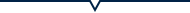
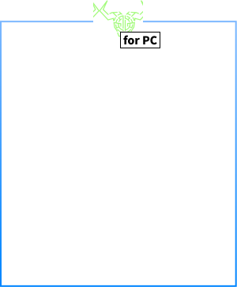
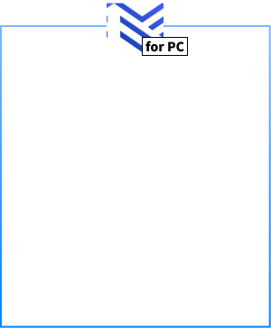
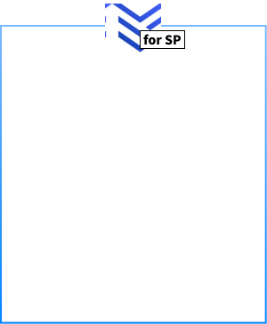

Staking
ステーキングについて
メリット
当プールに委託すると下記のようなメリットがあります。


詳しくは動画をクリック！
運営体制
-
サーバーモニタリング


監視ツールにてノード監視し、障害検知し迅速に普及いたします。
-
セキュリティ

エアギャップオフラインマシンの導入、サーバーはAWSを使用して高速な通信と、強固な堅牢性を維持、最も高いセキリュティ基準であり、常に最新のセキュリティが施されています。
-
アップデート


速やかにブロック生成時間外に実施し、ブロック生成に影響を与えません
-
DDOS対策
不特定多数のサーバアタックを検知し、サーバ通信を守ります。
プール基本情報
-
- ステッカー
- SIPO2
-
- プールID
- [Bech32][Bech32]：pool18rhzlrv83a7ygj7cp5uv8dx07qkn5drhe8nh6f3qvhv66xcyj2m
-
- プールID
- [hex]：38ee2f8d878f7c444bd80d38c3b4cff02d3a3477c9e77d262065d9ad
-
- マージン
- 2.5%
-
- コスト
- 340ADA
-
- 保証金
- 50.0 K
運用実績
JSPにおけるこれまでの運用実績を下記表に示します。注意点としては、「事前割り当てブロック数」は Cardanoによってランダムに割り当てられるため完全に運であるということです。 これはROSに影響ありません。ROSは年間を通して5%程度に必ず収束します。
ステーキング手順
- 
- 
- 
ステーキングとは
カルダノ・ネットワーク上で保有されているAdaは、ネットワーク内でのステークを表します。ステークの大きさは保有されているAdaの量に比例します。ステークを委任したり、誓約したりする能力は、カルダノの仕組みの基本となります。 Ada保有者が報酬を得るには、2つの方法があります。他の誰かが運営するステーク・プールに自分のステークを委任する方法と、自分自身のステークプールを運営する方法です。ウロボロス・プロトコルがブロック・チェーンに次のブロックを追加し、それによって金銭的な報酬を受け取るべき人（ステーク・プール）を選択します。その時にステーク・プールに委任されたステークの量が影響します。 ステーク・プールに委任されたステークが多ければ多いほど（一定のポイントまで）、次のブロックを作成する可能性が高くなります。報酬はそのステーク・プールに自分のステークを委任した人全員へ分配されます

カルダノ・ネットワーク上で保有されているAdaは、ネットワーク内でのステークを表します。ステークの大きさは保有されているAdaの量に比例します。ステークを委任したり、誓約したりする能力は、カルダノの仕組みの基本となります。 Ada保有者が報酬を得るには、2つの方法があります。他の誰かが運営するステーク・プールに自分のステークを委任する方法と、自分自身のステークプールを運営する方法です。ウロボロス・プロトコルがブロック・チェーンに次のブロックを追加し、それによって金銭的な報酬を受け取るべき人（ステーク・プール）を選択します。その時にステーク・プールに委任されたステークの量が影響します。 ステーク・プールに委任されたステークが多ければ多いほど（一定のポイントまで）、次のブロックを作成する可能性が高くなります。報酬はそのステーク・プールに自分のステークを委任した人全員へ分配されます